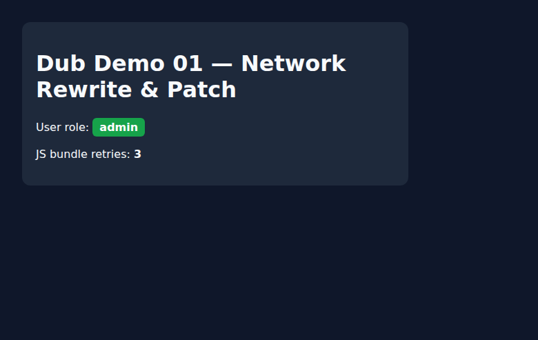
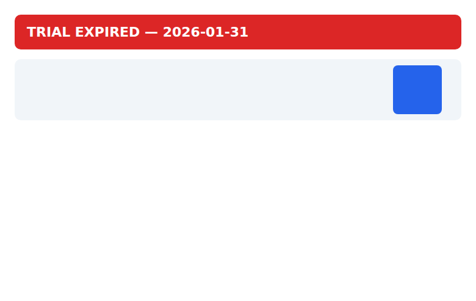

Chromium internals, exposed directly to agents.
Dub (DangerouslyUseBrowser) is a real Chromium 157 fork with native C++20 N-API bindings, an incur MCP server, single-use sandbox authentication, and QuickJS code-mode plugins. It is not Playwright, not a stock-CDP wrapper, and not Electron.
Why “dangerously”: Dub runs without confirmation prompts. It defaults to a separate persistent profile and a loopback listener (127.0.0.1), supports single-use sandbox tokens for cloud agents, and can attach to a real signed-in profile with that profile’s authority.
Personalized Coding Factory
Dub runs publicly on smithers.sh/smithersai/dangerouslyusebrowser and mirrors automatically to GitHub. Switch personas below to preview the exact audience sections declared in .smithers/home.json.
Clean open-source onboarding: install command, verified Chromium 157 demos, live Lighthouse Audit gauges, Engineering Wiki, Mythical History, and codebase Q&A.
Browse verified demos, architecture diagrams, and source-cited wiki pages indexed via llms.txt.
Every commit publishes live Uphill Lighthouse scores across bridge safety, TypeScript, MCP security, fuzzing, and docs.
Connect Claude Code, Codex, or Antigravity to https://smithers.sh/api/mcp to inspect issues, flows, and artifacts.
Contributors get local setup commands, active issue and PR queues, and direct access to run tests, Uphill backpressure, and flows freely in untrusted mode.
Fork and contributor runs read from build.smithers.sh but never carry write tokens, so untrusted output can never poison the shared object store.
Changes to .github, .smithers, chromium/patches, and native always route through maintainer review before landing.
Accepted PRs merge as the contributor’s own work after trusted verification and human maintainer approval.
Opens directly on Today: press b for a new branch, manage TODO stacks, inspect failing runs first, mint one-time sandbox tokens, and approve releases.
Controlled sandboxes and main runs publish incremental smthrs artifacts to https://build.smithers.sh.
Mint single-use SHA-256 bootstrap tokens via dub serve --print-one-time-token or scripts/mint-sandbox-auth.mjs.
Merging from Smithers Cloud to GitHub main triggers trusted CI, npm + GitHub Releases, and instant docs + audit publishing.
Connect Your Agent (One-Time Sandbox Auth)
Pick your agent client and trust level below to generate exact commands for both Dub’s single-use sandbox MCP server and Smithers Cloud MCP.
Lighthouse Backpressure
Every change runs Uphill across five scored categories and publishes an interactive Google Lighthouse-style audit report backed by real machine receipts.
Demo
What a Chromium fork unlocks
Stock browser automation sits behind DevTools protocol ceilings. Dub patches Chromium directly at native C++ seams, so agents can control browser state that Playwright and stock CDP cannot reach cleanly.
| Capability | What Dub does | Chromium seam |
|---|---|---|
| NetworkService interception | Mock, block, redirect, and patch decoded response bodies across tabs, dedicated/shared/service workers, CacheStorage, and HTTP disk cache, plus bounded net log --follow. |
services/network/dub + Mojo policy |
| Per-tab isolated engine clock | Freeze, jump 31 days with bounded interval fire caps, step exact animation frames, and monotonically resume Date, performance.now(), timers, rAF, and CSS animations without disturbing sibling tabs in the same renderer. |
Per-tab V8 + Blink clock override |
| Native actor + WebMCP | Own a persistent profile (profile attach), invoke Chromium’s native actor tools dispatching real isTrusted: true events, and discover or call live site-registered WebMCP tools. |
chrome/browser/actor/tools + WebMCP |
| QuickJS plugins & triggers | Subscribe to live Chromium push events over AF_UNIX, run persistent QuickJS TypeScript cells, route decisions through typed Jev evaluators, and hot-reload TypeScript plugins. | dub_events + @smthrs/harness |
| Cloud MCP one-time auth | Print single-use SHA-256 bootstrap tokens for sandboxes and BYO agents, exchange atomically once at /auth/exchange, reject replays, and attenuate untrusted scopes. |
src/auth.ts + src/http.ts |
Quickstart
Requires Node 22+ and a C++20 toolchain for the native N-API bridge. Every dub subcommand is exposed as a typed MCP tool once the server is running. Tabs, clocks, and network rules persist across calls.
1. Install Dub and fetch the Chromium fork
npm i -g dangerouslyusebrowser
dub install2. Start the browser and authenticated MCP server
dub serve --port 7777 --print-one-time-token --sandbox-id local-1
# Serves MCP over HTTP at http://127.0.0.1:7777/mcp
# Exchanges the single-use token once at POST http://127.0.0.1:7777/auth/exchange3. Connect your agent to Dub and Smithers Cloud
claude mcp add --transport http dub http://127.0.0.1:7777/mcp
claude mcp add --transport http smithers-cloud https://smithers.sh/api/mcpExamples
Run these directly from the CLI or let an agent invoke the matching MCP tools against the live browser session.
1. Rewrite the network
Point a production frontend at a local fixture, hot-patch a served JS bundle across caches and Service Workers, and follow matching traffic.
dub net rewrite --match 'https://api.acme.com/v1/user' --status 200 --body ./fixtures/admin-user.json
dub net patch --match '*/static/app.*.js' --replace 'retries:0' --with 'retries:3'
dub net log --match 'api.acme.com' --follow2. Control the clock
Freeze one tab’s V8 and Blink clock, step CSS animations frame-by-frame for deterministic screenshots, and jump 31 days to test trial expiry without affecting neighboring tabs.
dub clock freeze --tab 1 --at 2026-01-01T09:00:00Z
dub clock step --tab 1 --frames 20
dub clock advance --tab 1 --by 31d
dub screenshot --tab 1 --out trial-expired.png3. Act as you
Attach to a persistent profile, discover Chromium’s native actor tools alongside page-registered WebMCP tools, and invoke both with real trusted input.
dub profile attach --name Default
dub tools list --tab 1
dub tools call --tab 1 page.submit_expense --input '{"amount":42.10,"memo":"team lunch"}'
dub tools call --tab 1 actor.click --input '{"target":"Approve"}'Verified evidence
Every screenshot below was captured directly from the compiled Linux x86-64 Dub Chromium 157.0.8082.0 binary during the 2026-11-23 launch verification run.
net rewrite · net patch · net log --follow

/v1/user rewritten to role: "admin" from a fixture file and /static/app.123.js hot-patched (retries:0 → retries:3) inside Chromium’s NetworkService.
clock freeze · clock step · clock advance --by 31d

2026-01-01T09:00:00Z.
left: 289.785px).
TRIAL EXPIRED.profile attach · tools list · WebMCP + actor.click

signed-in:will), discovered 9 tools, invoked WebMCP page.submit_expense, and clicked Approve via native actor.click (isTrusted=true).